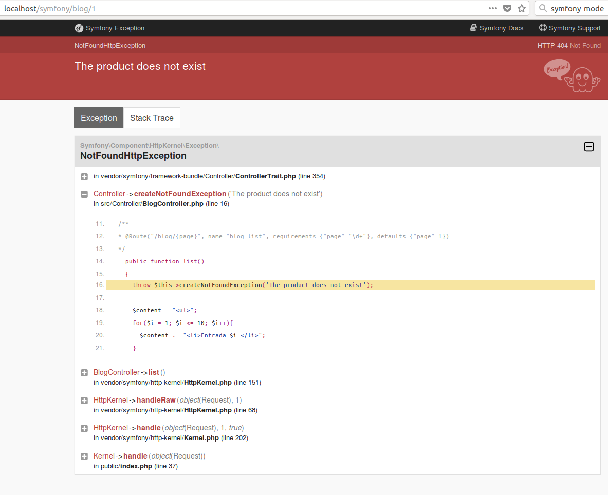
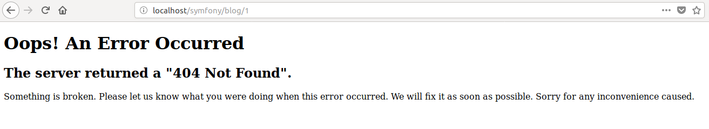

Un controlador es una función PHP creada por nosotros que lee información del objeto Request y crea y devuelve un objeto Response. La respuesta podría ser una página HTML, JSON, XML, una descarga de archivos, una redirección, un error 404 o cualquier otra cosa que puedas hacer. El controlador ejecuta cualquier lógica arbitraria que tu aplicación necesita para representar el contenido de una página.
En apartados anteriores hemos visto el uso básico de los controladores y cómo definir las rutas.
Si queremos redirigir al usuario a otra página, usamos los métodos redirectToRoute() y redirect():
xxxxxxxxxxuse Symfony\Component\HttpFoundation\RedirectResponse;// ...public function indexAction(){ // redirect to the "homepage" route return $this->redirectToRoute('homepage'); // redirectToRoute is a shortcut for: // return new RedirectResponse($this->generateUrl('homepage')); // do a permanent - 301 redirect return $this->redirectToRoute('homepage', array(), 301); // redirect to a route with parameters return $this->redirectToRoute('app_lucky_number', array('max' => 10)); // redirect externally return $this->redirect('http://symfony.com/doc');}Cuando las cosas no se encuentran, debemos devolver una respuesta 404. Para hacer esto, lanzamos un tipo especial de excepción:
xxxxxxxxxxuse Symfony\Component\HttpKernel\Exception\NotFoundHttpException;// ...public function indexAction(){ // retrieve the object from database $product = ...; if (!$product) { throw $this->createNotFoundException('The product does not exist'); // the above is just a shortcut for: // throw new NotFoundHttpException('The product does not exist'); } return $this->render(...);}Por supuesto, podemos lanzar cualquier clase de excepción en su controlador: Symfony devolverá automáticamente un código de respuesta HTTP de 500.
xxxxxxxxxxthrow new \Exception('Something went wrong!');Por ejemplo:
xxxxxxxxxx//BlogController.phpclass BlogController extends Controller{ // ... /** * @Route("/blog/{page}", name="blog_list", requirements={"page"="\d+"}, defaults={"page"=1}) */ public function list() { throw $this->createNotFoundException('Esta entrada no existe'); }De esta forma, al visitar la página http://localhost/symfony/blog/1 nos genera la siguiente salida HTML, cuando estamos en modo developer, (dev)

Y la siguiente salida cuando estamos en modo production (prod):

Para cambiar el modo de entorno (environment) desymfony, se debe editar el fichero .envxxxxxxxxxxAPP_ENV=prod // prod || devSe puede cambiar la plantilla devuelta por defecto por Symfony cuando se producen errores. En la siguiente página se explica cómo hacerlo.
Request Podemos usar el objeto Request de Symfony si lo pasamos como argumento a una función
xxxxxxxxxxuse Symfony\Component\HttpFoundation\Request;public function indexAction(Request $request){ $request->isXmlHttpRequest(); // is it an Ajax request? $request->getPreferredLanguage(array('en', 'fr')); // retrieve GET and POST variables respectively $request->query->get('page'); $request->request->get('page'); // retrieve SERVER variables $request->server->get('HTTP_HOST'); // retrieves an instance of UploadedFile identified by foo $request->files->get('foo'); // retrieve a COOKIE value $request->cookies->get('PHPSESSID'); // retrieve an HTTP request header, with normalized, lowercase keys $request->headers->get('host'); $request->headers->get('content_type');}Para devolver JSON desde un controlador, usamos el método helper json(). Esto devuelve un objeto especial JsonResponse que codifica los datos automáticamente:
xxxxxxxxxx// ...public function indexAction(){ // returns '{"username":"jane.doe"}' and sets the proper Content-Type header return $this->json(array('username' => 'jane.doe')); // the shortcut defines three optional arguments // return $this->json($data, $status = 200, $headers = array(), $context = array());}Podemos usar el helper file() para servir un archivo desde dentro de un controlador:
xxxxxxxxxxuse Symfony\Component\HttpFoundation\File\File;// ...public function fileAction(){ // send the file contents and force the browser to download it return $this->file('../static/hola.txt');}El fichero está en este caso en la carpeta static (creada a la altura de public)
El helper file() proporciona algunos argumentos para configurar su comportamiento:
xxxxxxxxxxuse Symfony\Component\HttpFoundation\File\File;use Symfony\Component\HttpFoundation\ResponseHeaderBag;public function fileAction(){ // load the file from the filesystem $file = new File('/path/to/some_file.pdf'); return $this->file($file); // rename the downloaded file return $this->file($file, 'custom_name.pdf'); // display the file contents in the browser instead of downloading it return $this->file('invoice_3241.pdf', 'my_invoice.pdf', ResponseHeaderBag::DISPOSITION_INLINE);}Podemos usar el objeto SessionInterface de Symfony si lo pasamos como argumento a una función
xxxxxxxxxxuse Symfony\Component\HttpFoundation\Session\SessionInterface;public function indexAction(SessionInterface $session){ // store an attribute for reuse during a later user request $session->set('foo', 'bar'); // get the attribute set by another controller in another request $foobar = $session->get('foobar'); // use a default value if the attribute doesn't exist $filters = $session->get('filters', array());}También podemos almacenar mensajes especiales, llamados mensajes "flash", en la sesión del usuario. Por diseño, los mensajes flash deben usarse exactamente una vez: desaparecen de la sesión automáticamente tan pronto como los recuperamos. Esta función hace que los mensajes "flash" sean especialmente útiles para almacenar notificaciones de usuario.
Por ejemplo, imagina que está procesando un envío de formulario:
xxxxxxxxxxuse Symfony\Component\HttpFoundation\Request;public function updateAction(Request $request){ // ... if ($form->isSubmitted() && $form->isValid()) { // do some sort of processing $this->addFlash( 'notice', 'Your changes were saved!' ); // $this->addFlash() is equivalent to $request->getSession()->getFlashBag()->add() return $this->redirectToRoute(...); } return $this->render(...);}Después de procesar la request, el controlador establece un mensaje flash en la sesión y luego redirige. La clave del mensaje (aviso en este ejemplo) puede ser cualquier cosa: usará esta clave para recuperar el mensaje.
En la plantilla siguiente (o incluso mejor, en la plantilla de diseño base), leemos los mensajes flash de la sesión usando app.flashes():
xxxxxxxxxx# templates/base.html.twig #}{# you can read and display just one flash message type... #}{% for message in app.flashes('notice') %} <div class="flash-notice"> {{ message }} </div>{% endfor %}{# ...or you can read and display every flash message available #}{% for label, messages in app.flashes %} {% for message in messages %} <div class="flash-{{ label }}"> {{ message }} </div> {% endfor %}{% endfor %}O en PHP
<!-- templates/base.html.php -->// you can read and display just one flash message type...<?php foreach ($view['session']->getFlashBag()->get('notice') as $message): ?> <div class="flash-notice"> <?php echo $message ?> </div><?php endforeach ?>// ...or you can read and display every flash message available<?php foreach ($view['session']->getFlashBag()->all() as $type => $flash_messages): ?> <?php foreach ($flash_messages as $flash_message): ?> <div class="flash-<?php echo $type ?>"> <?php echo $message ?> </div> <?php endforeach ?><?php endforeach ?>